Hi, my name is
Ephraim Djeket.
A Front-End Developer.
A Front-End Developer student that's currently studying at Noroff. Passionately delving into the intricacies of web design and user-centric interfaces. Eager to learn, adapt, and collaborate, I am on a constant quest to keep abreast of the latest industry trends and innovations, ensuring that I bring both technical prowess and fresh perspectives to every project.
Tools I use:

 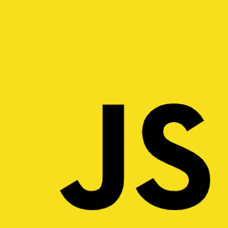
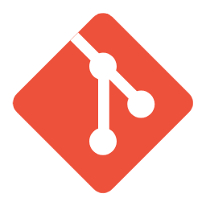
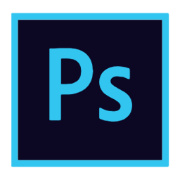
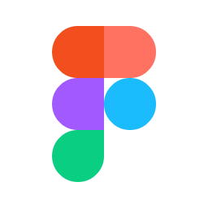
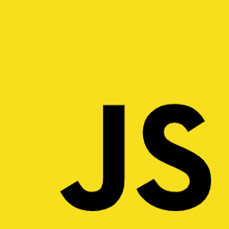
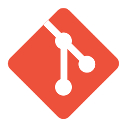
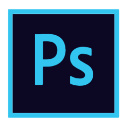
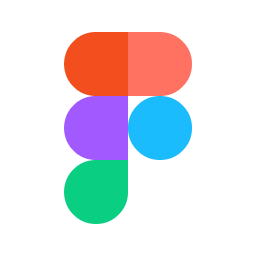
Latest Projects
Blockchainbites
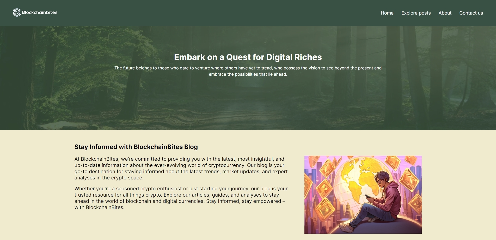Blockchainbites is a blog site created for my project exam 1. The goal of this project was to put into practice the skills learned over my first year of studies. This site makes use of HTML, CSS, Javascript and Wordpress REST API.
Community Science Museum
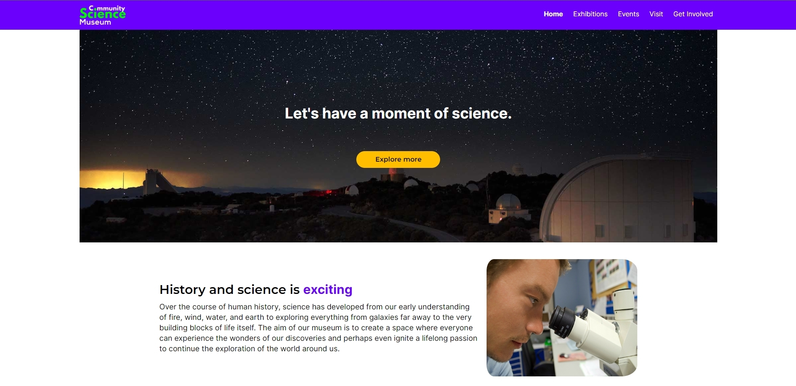Community Science Museum is a site created for my semester project 1. The goal here was to showcase my creative and technical knowledge and skills based on the first semester curriculum. Created with HTML and CSS.
Rainy Days
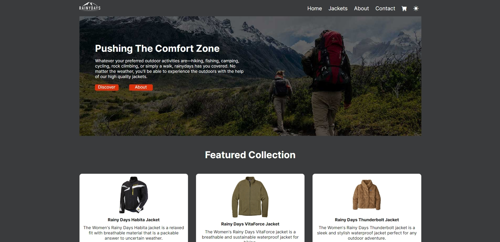Rainy Days is a site created for my cross-course project. The main goal here to fetch products from an external API and remove the hardcoded HTML. It also includes a loading indicator. Created with HTML, CSS and Javascript.
Experience
Education
Oct 2022 - PRESENT · Noroff Front-End Development
Front-end development is the tech education where visual design meets coding, web, and UX design.
Aug 2015 - Aug 2016 · Randaberg VG2
Automotive studies involved troubleshooting, repair, and maintenance of various types of vehicles.
Aug 2015 - Aug 2016 · Randaberg VG2
Technology and industrial subjects involve practical work with various materials, tools, techniques, and machines to produce goods and services.
Work Experience
Jun 2023 - PRESENT · Avarn Security Norway
My main tasks include monitoring to prevent theft, violence, or rule infractions, patrolling the property, accessing surveillance footage, checking the identities of visitors and employees and responding to alarms and investigating disturbances.
May 2022 - Dec 2022 · 7 Eleven
Experience in providing excellent customer service and assisting when there were many customers. Focused on keeping the store clean, preparing food, and selling the products we had. Was responsible for locking the store after closing time.
May 2019 - Oct 2021 · Hegre Auto AS
Worked as an apprentice for 1 year and received my certification as a car mechanic on June 11, 2020. Tasks included service and maintenance, minor and major repairs, as well as tire/wheel changes.
Contact Me
ephraimdjeket@gmail.com
+47 91195852
dertzey.eth